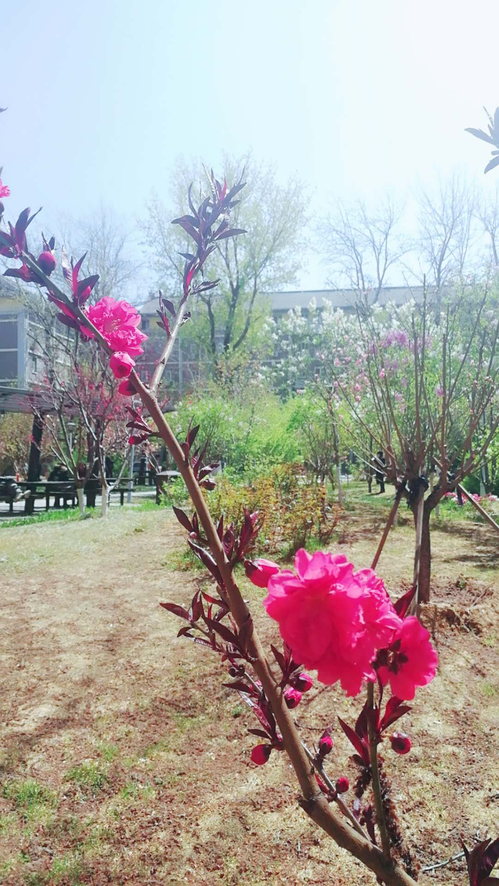
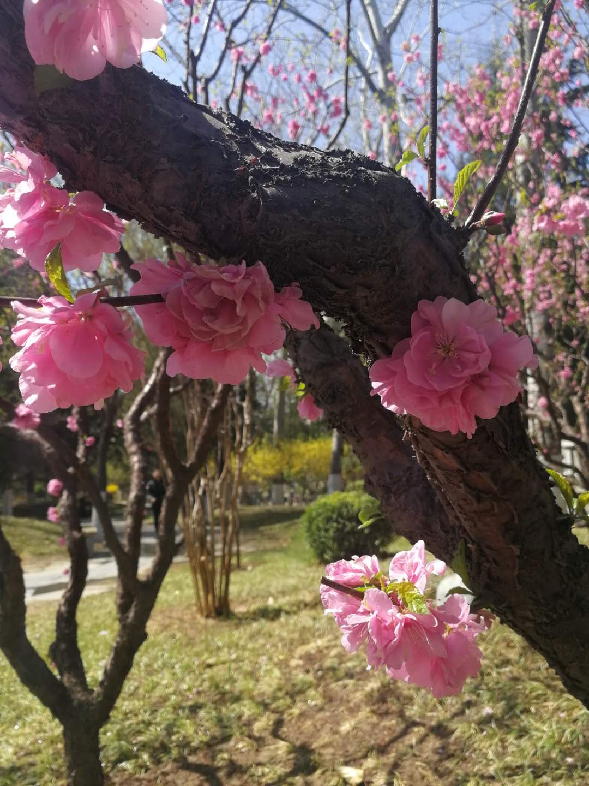

<h1><center>桃花</center></h1>
<p><center>

    </center></p>
    <p><center>

    </center></p>
<p><center>
乔木，高3-8米，树冠宽广。叶片椭圆披针形。花单生，先于叶开放。花瓣椭圆形，粉红色，花直径2.5-3.5厘米。花期3-4月。</center></p>
   <center><p>北外暮思园的桃花此时开得正盛，喜欢桃花的朋友们可以前去观赏。
    </center></p>
      <body bgcolor="#FAEBD7">